1. What Avantis Hub does
Avantis Hub sits between the things that send cues and an Allen & Heath Avantis console. A MIDI note, a control change, an OSC message, a clip starting in Ableton Live or a tap on a phone becomes a mute, a fader move, a scene recall or a whole group of changes on the console.
It runs on a Mac on the same network as the console and talks to the console's own MIDI-over-network port, so nothing needs to be installed on the console and no MIDI cable is involved.
The hub is built for live use, so it is cautious by design:
- Nothing is ever sent to the console unless the hub is Armed.
- Panic stops the hub sending at once.
- The screen shows what the console reports, never what the hub hopes happened.
- It will not echo the console's own changes back to it, so two systems cannot chase each other in a loop.
2. What you need
- A Mac running macOS 15 or later.
- An Allen & Heath Avantis on the same network as the Mac, by cable or Wi-Fi. Firmware V2.0 or later gives the most to control. Earlier firmware works too: see Connecting to the console.
- Something to send cues: any MIDI app or controller on the Mac, anything that sends OSC, or Ableton Live with AbletonOSC. None is required. You can run everything from quick buttons alone.
- Optional: an iPhone or iPad running iOS or iPadOS 18 or later, on the same network, for the companion app.
3. Getting started
The shortest path from a fresh install to a working cue:
- Open Avantis Hub. It starts Disarmed, in Build view.
- Click the console pill at the top, type the console's IP address and click Connect. The channel names appear in the right-hand column. See Connecting to the console.
- Click Learn. Move a fader or press a mute on the console, then send the note or message that should control it. A mapping appears.
- Click Armed.
- Send the note again. The console responds, and the Monitor at the bottom shows what was sent.
The first time the hub tries to reach the console, macOS may ask whether Avantis Hub may find devices on your local network. Allow it, or the hub cannot connect.
4. The window at a glance
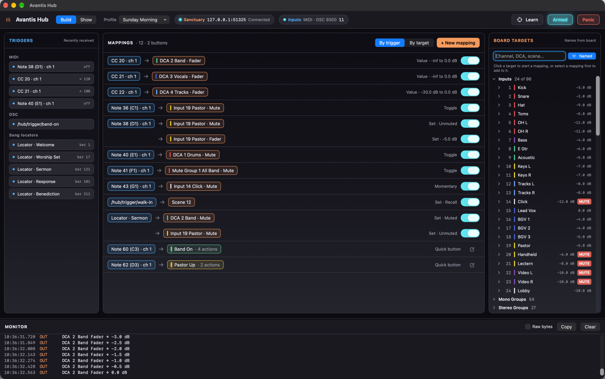
Across the top, from left to right:
| Control | What it is for |
|---|---|
| Build / Show | Swaps between the two views. Build is for setting up, Show is for running a service. Tab swaps too. |
| Profile | The set of mappings and quick buttons in use, and the menu for managing them. See Boards and profiles. |
| Console pill | The board's name, address and connection state. Click it for the board's settings. |
| Inputs pill | Which inputs are on (MIDI, Live, OSC and its port) and a running count of messages received. Click it for the MIDI, OSC and Ableton settings. |
| Update | Only appears when a new version was found while the hub was armed. See Updates. |
| Learn | Build view only. Makes a mapping by example. |
| Armed / Disarmed | Whether the hub may send to the console. Click to change. It glows only when armed and connected. |
| Panic | Disarms at once and stops everything in progress. |
Colour is used the same way everywhere: blue is something coming in (a trigger), orange is something on the console (a target), and cyan means live and armed.
5. Armed, Disarmed and Panic
This is the most important idea in the hub.
Disarmed
The hub listens, shows every trigger that arrives and tells you in the Monitor what it would have done, but sends nothing. Build and test here. A press that arrives while disarmed is ignored outright: it is not stored up for later, and a toggle does not quietly flip its memory.
Armed
Triggers, quick buttons and the faders in Show view all act on the console straight away. The Armed button glows cyan when the hub is armed and the console is connected. Armed with no console keeps the word but loses the glow, and the menu bar icon turns red.
Panic
Panic disarms the hub and stops any glide where it is. It sends nothing to the console: nothing is muted, nothing moves, no scene is recalled. Its only job is to stop the hub. After Panic the hub stays disarmed until someone arms it at the Mac.
Panic is also available from the menu bar panel, from a paired phone or iPad that is allowed to use it, and as the OSC message /hub/panic.
Other things that disarm the hub
- Switching to another board.
- Choosing or leaving a shared setup folder.
Losing the console does not disarm the hub, but nothing can be sent until it is back.
There is no remote arming
No MIDI message, OSC message, phone or shortcut can arm the hub. Arming happens at the Mac, on purpose, with one exception you choose yourself: Arm when the console connects in the Console settings.
Quitting while armed
Quitting an armed hub asks first, because it stops every trigger mid-service. Opening a second copy never pushes an armed hub aside. See The menu bar.
6. Connecting to the console
- Put the Mac on the same network as the Avantis.
- Click the console pill, or open Settings > Console.
- Click Find beside Console IP and pick your console from the list, or type its address. You will find it on the console under Utility / Control / Network.
- Set Base MIDI channel to match the console, under Utility / Control / MIDI. The console's default is 12 to 16. The hub shows the range as "12 to 16" because the console uses five MIDI channels in a row.
- Set Firmware to match the console. Choose V2.0 and later unless the console is still on older firmware.
- Click Connect.
When it connects, the pill reads Connected and the console sends its channel names and colours, which fill in the Board Targets column.
Firmware
Firmware V2.0 added inputs 65 to 96, more groups, auxes and matrices, and the UFX sends and returns. On Before V2.0 the hub leaves those out and never sends to them. A mapping that points at something the chosen firmware does not have is put on hold and says why.
Finding the console
Find asks the network which Avantis consoles are there and lists each one that answers, with its name, address and firmware. Click one to put its address in Console IP. That is all it does: it never connects and never changes an address by itself.
- It only reaches consoles on the same network as the Mac. A console on another network, reached through a router, does not answer and has to be typed in.
- Every Avantis gives the same name unless it has been renamed, so where there is more than one, check the address against the console's Utility / Control / Network screen.
- If the console's address changes, as it can when the network hands addresses out, click Find again and pick it.
- When a board will not connect, the hub looks once for a console at another address. If exactly one that could be yours answers, a banner offers it, with Use This Address and Not Now. The hub never changes the address by itself. If two consoles answer, or the board's own address answers, it offers nothing.
One control connection at a time
The console answers one connection on its MIDI control port at a time. If another app on the network is already using that port, the hub connects but gets no names back. Close the other app, or the other hub, and reconnect.
Avantis Director and Allen & Heath's tablet apps use a different connection, so they can stay open alongside the hub.
If the connection drops
The hub keeps trying on its own, quickly at first and then every few seconds, and the pill shows which attempt it is on. When the console comes back it carries on. Nothing is sent while it is away.
What the hub knows about the console
The console tells the hub about a fader or a mute when it changes. Its MIDI control has no way to be asked where everything is right now. So:
- A channel that has not moved since the hub connected shows what the hub remembers from last time, dimmed.
- A fader the hub has never seen move shows ?. A mute it has not heard about on this connection shows MUTE ? with a dashed edge.
- As soon as a fader or mute changes, by hand or by a cue, the hub shows the live value.
The console only answers for the channels and mixes it is set up with, so a mix your console does not use keeps its plain number for a name.
Remembered values are for your eyes only. The hub never uses a remembered value to decide anything.
Reading input mutes on connecting (experimental)
With Read input mutes on connecting switched on for a board, the hub makes one short extra visit to the console as it connects, on the connection Avantis Director uses. It reads which inputs are muted and leaves. It only reads, and it never changes anything.
- It fills in the mutes of the inputs only. Faders, DCAs and mixes still start unknown.
- If the visit fails for any reason, nothing changes and the hub carries on as it would without it. The Monitor says what happened.
- It is available on V2.0 and later only.
Starting up automatically
- Connect when the app opens connects to the active board as soon as the hub starts.
- Arm when the console connects arms the hub the moment it connects, with nobody clicking Armed. After Panic or a manual disarm it stays disarmed until you arm it yourself.
7. Boards and profiles
Boards
A board is one console: its name, its address and its MIDI channel. The hub also remembers each board's channel names, colours and last known levels, so they show even when you are not connected.
If you work with more than one console (a sanctuary and a youth room, say), make a board for each with New Board and pick between them with the Board menu in the Console settings. Switching boards disconnects and disarms.
Delete Board removes the board, its profiles and what the hub remembers of that console. It cannot be undone, and the last board cannot be deleted.
Profiles
A profile is a complete set of mappings and quick buttons, such as "Sunday morning" or "Youth night". Each profile belongs to one board. The Profile menu in the header switches between them and holds these commands:
| Command | What it does |
|---|---|
| New Profile | An empty profile on this board. |
| Duplicate | A full copy, including quick buttons, their triggers and the buttons they run. |
| Rename | Changes the name only. |
| Delete | Removes the profile. It can be brought back with Restore Deleted Profile. |
| Copy to Board | Copies the profile to another board. Targets are matched to that board's channels by name where the names agree. |
| Export to File / Import from File | Saves a profile as a file, or loads one, for moving between Macs or keeping a copy. |
| Restore from Backup | Goes back to an earlier saved version of this profile. |
| Restore Deleted Profile | Brings back a profile that was deleted, even one deleted on another Mac sharing the setup. |
Saving and backups
There is no Save command. Every change is saved as you make it. The hub keeps the last 30 dated backups of each profile, which is what Restore from Backup shows. Edit > Undo and Redo cover mapping and quick button changes.
8. Build view
Build view has three columns and the Monitor underneath.
| Column | What it shows |
|---|---|
| Triggers | Every trigger the hub has recently received, newest first. This is where you check that a cue is arriving at all. |
| Mappings | The mappings in this profile. Selecting one opens its inspector below the list. |
| Board targets | Everything on the console a mapping can control, with the console's own names and colours. |
Drag the gap between two columns to resize them, and double-click it to put the width back. Drag the top edge of the Monitor to make it taller or shorter. The sizes are remembered.
The Triggers column
- Each trigger shows what it was (for example "Note 69 (A3) · ch 13") and its last value. Hover over one to see where it came from.
- Use makes it the trigger of the selected mapping.
- A trigger that presses a quick button is marked as such.
- When the hub has song information, a Song locators section lists each marker and the bar it falls on. These can be used as triggers too.
The Board targets column
- The header says Names from board when connected. When not connected it says when the names were last seen.
- Type in the search field to find a channel, DCA or scene by name or number. The x at the end of the field clears it.
- Named hides every channel nobody has named on the console, which on most consoles is most of them. Click it again to see everything.
- Channels are grouped by type. Click the arrow beside a group, then beside a channel, to see what can be controlled on it.
- Each channel shows its number, its colour, its name, its level and a MUTE badge when muted.
- A target already used by the selected mapping is highlighted.
9. Mappings
A mapping says "when this arrives, do that". It has one trigger and one or more targets.
Making a mapping with Learn
- Click Learn. A bar appears across the top with two steps.
- Choose the target: move the fader or press the mute on the console, or click a target in the right-hand column.
- Send the trigger: play the note, move the controller or send the OSC message.
The hub joins the two into a mapping and opens it. While Learn is running, triggers are recorded, not run, so nothing happens on the console. If the trigger you send is already used by another mapping, the bar warns you: learning it adds a second mapping and both will fire. Click Learn again, or Cancel, to stop.
Making a mapping by hand
- Click + New mapping.
- Set the trigger: click Use beside a trigger in the left column, or choose its type and type its number and channel in the inspector.
- Click a target in the right column. Click another to add it as a second row on the same trigger.
- Choose the mode and its values (below).
- Click Done.
You can also start from the target: with no mapping selected, click a target in the right column and a new mapping opens for it, ready for its trigger. Cancel removes it again.
The inspector
Selecting a mapping opens its inspector under the list.
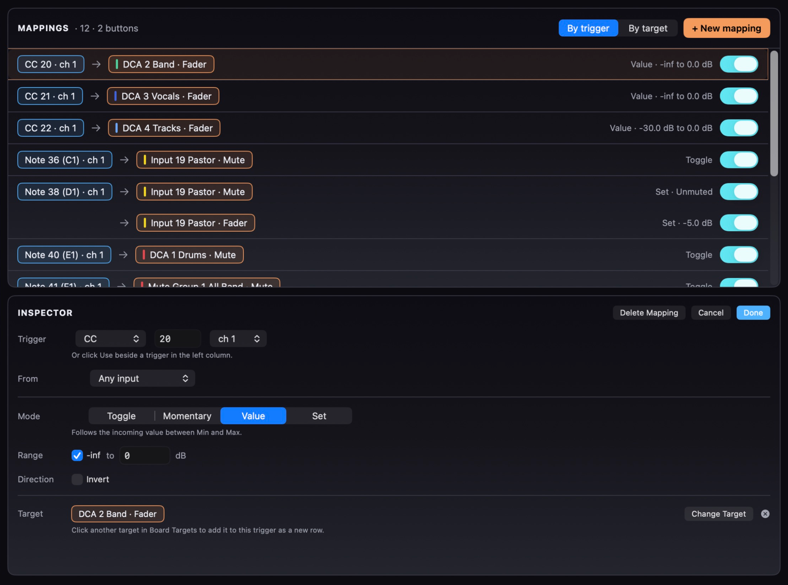
- Done keeps the mapping as it is now and closes the inspector.
- Cancel, the close button or Esc backs out. The mapping goes back to how it was when you opened it, and a brand new mapping is removed.
- Delete Mapping removes it.
- Change Target replaces a row's target with the next one you click. The small x clears a row.
It reads from top to bottom in three parts: what triggers the mapping (Trigger and From), how it behaves (Mode, and where they apply Range, Glide and Direction), and what it controls (Target).
A new MIDI trigger starts on the channel you used last, to save retyping it.
Trigger types
| Type | Fires when |
|---|---|
| Note | A MIDI note on that number and channel is played. Note names follow Ableton Live and Logic, where middle C (note 60) is C3. |
| Control change (CC) | A controller on that number and channel sends a value. |
| Program change | That program number is sent on that channel. |
| OSC | A message arrives on that exact address. Addresses are not case sensitive. |
| Song locator | Playback in Ableton Live reaches a marker with that name. Needs song information: see Sending cues. |
Modes
| Mode | What each press does | Good for |
|---|---|---|
| Toggle | Flips between on and off. | One pad that mutes and unmutes. |
| Set | Puts every target at the value you chose, whatever the console shows now. | Cues that must always end the same way, such as "pastor unmuted at -5 dB". |
| Momentary | On while held, off when released. | Talkback-style holds. |
| Value | Follows the incoming value between a Min and a Max. | A physical fader or knob riding a level. |
For mutes, the hub says Muted and Unmuted instead of on and off, because "on" for a mute means silent, which reads backwards. Assignments say On and Off.
For a fader in Value mode, Range gives the Min and the Max, as levels in dB. A controller at its lowest gives Min and at its highest gives Max. Tick -inf to make Min fully off. Invert turns it round, so the controller at its highest gives Min.
The mapping list
- By trigger groups the list under each trigger, with everything it controls. By target groups it under each channel, with everything that controls it. A mapping with several targets appears under each.
- Target chips are drawn in the console's colour for that channel.
- The switch at the right turns a mapping off without deleting it.
- Quick buttons that have a MIDI trigger are listed too, so the list answers "what does this note do?" in full. Click one to open the button's editor.
- A warning triangle means another mapping uses the same trigger on the same target. Both fire on every trigger, so they can cancel each other. Change one trigger, or switch one off.
10. What can be controlled
The hub offers what the console's control protocol exposes, and no more.
| On the console | V2.0 and later | Before V2.0 | Mute | Fader |
|---|---|---|---|---|
| Inputs | 96 | 64 | Yes | Yes |
| Mono Groups, Auxes, Matrices | 54 each | 40 each | Yes | Yes |
| Stereo Groups, Auxes, Matrices | 27 each | 20 each | Yes | Yes |
| Mono and Stereo FX Sends, FX Returns | 12 each | 12 each | Yes | Yes |
| Stereo UFX Sends and Returns | 8 each | None | Yes | Yes |
| Mains | 3 | 3 | Yes | Yes |
| DCAs | 16 | 16 | Yes | Yes |
| Mute Groups | 8 | 8 | Yes | No |
| Scenes | 500 | 500 | Recall | |
Which column applies is the board's Firmware setting. See Connecting to the console.
Inputs also offer:
- Main assign: whether the input feeds the main mix.
- Aux sends and FX sends from that input.
- DCA assign: membership of each of the 16 DCAs.
- Mute group assign: membership of each of the 8 mute groups.
How many of each your console actually uses depends on how it is configured. A target for a mix your show does not have simply does nothing.
UFX key and scale
On firmware V2.0 and later, the hub can set the key and the scale that the console's UFX pitch effects follow, such as a vocal tuner. They are in Board Targets under UFX: twelve keys from C to B, and the scales Major, Minor and Chromatic.
- Each is sent on a press, like a scene recall. There is no value to choose and nothing to toggle.
- Key and scale are separate. A cue for "G minor" is one trigger with two targets: Key G and Scale Minor.
- They are the console's global key and scale. An effect set to follow its own key ignores them.
- The hub cannot read the key the console is on, so it never shows one.
- On a board set to firmware before V2.0 they are not offered, and a mapping that uses one is held and says why.
A UFX unit's own parameters
The console can give each UFX unit a MIDI channel of its own, and tie some of that unit's parameters, such as a vocal tuner's Bypass, Retune or Correction, to controller numbers you choose. That is set on the console under FX / UFX / Show Routing / MIDI Settings. The hub can then set those parameters.
- In Board Targets, open UFX. Under Parameters each one has a name, with its MIDI channel and controller number beside it. Click a name to use it as a target.
- A board starts with three for a vocal tuner: bypass, correction and retune, on MIDI channel 6, controllers 20 to 22. Units given the same channel and controller number on the console switch together, so one bypass covers every tuner. The console has no numbers of its own for these, so either set the same ones on the console or change these to match it.
- To add one, type the channel, the controller number and a name, and click Add. The fields start on the channel used last and its next free controller number. The pencil beside a name puts it in the fields to rename it. Saving an empty name removes it from the list. Mappings that already use it keep working and show its numbers instead.
- The names are kept with the board.
- The value is a plain number from 0 to 127, which the console spreads across whatever the parameter can be. In Set mode you choose the number. Toggle alternates between 127 and 0. Value mode lets a fader ride it.
- The unit's channel must not be one of the console's own five. A mapping that uses one of those is held and says why.
- Which number means what is up to the unit. Find it by trying it on the console before a service.
Levels
Faders run from -inf (off) through 0 dB (unity) to +10 dB. The console moves in steps of about half a dB, so a level lands on the nearest step.
Scenes
Type a scene number in the Scenes group and click Recall scene to add it as a target. The hub can recall a scene but cannot read the list of scene names, and it only learns the current scene when one is recalled.
11. Snap and Glide
Every fader change can either Snap, jumping straight to its level, or Glide, travelling there over a time you set in seconds. You choose per mapping, per quick button action, and once for all phones and iPads.
- A glide runs from wherever the fader is now. If the hub does not know the level yet, it snaps instead.
- While a fader is gliding, its dB readout in Show view turns cyan.
- A glide stops where it is if you move that fader on the console or drag it in Show view, on Panic, on disarming, or if the console is lost. The hand on the fader always wins.
- A new change to the same fader replaces the glide in progress.
The shape of a glide
In Settings > Console, Shape of a glide applies to every glide:
- Even covers the same number of dB in every moment.
- Eased starts and ends gently, which sounds more like a hand.
12. Show view
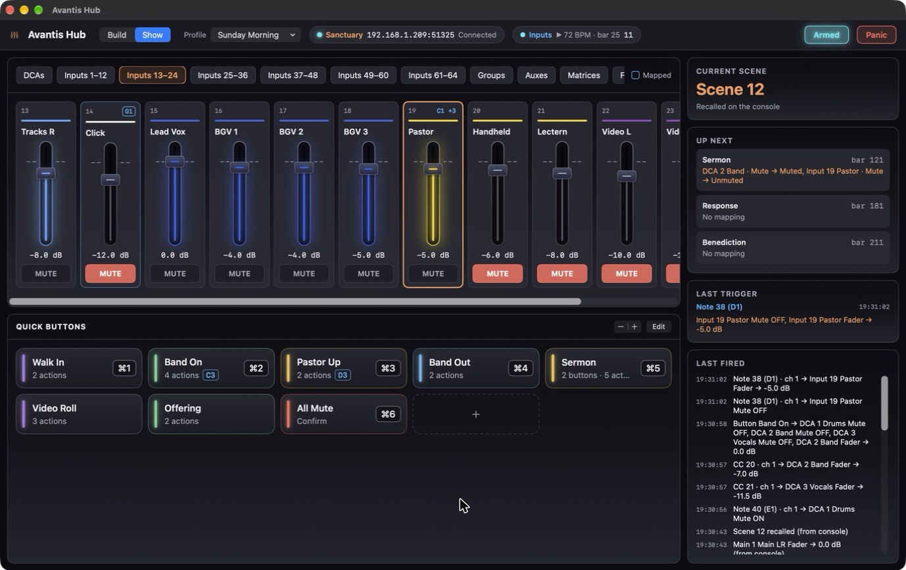
Show view is the one to leave open during a service. The surface is on the left and the status is on the right.
Layers
The tabs across the top choose which channels are shown: your own pages first, then DCAs, Inputs twelve at a time, Groups, Auxes, Matrices, FX, UFX and Mains with Mute Groups.
Named, at the top right, hides every channel nobody has named on the console and closes up the tabs to fit. A console with 30 named inputs then shows three tabs of inputs and not eight. Click it again to see everything. Until the hub has seen any names, it shows everything.
Pages
A page is a tab you build yourself, holding whichever channels you want in whatever order, like a custom layer on the console. A page for the band might hold the bass, the drums, the click, the tracks and the keys, side by side, though they sit far apart on the console.
- Click Pages… at the top right of the surface.
- Click New Page and give it a name.
- Under Add strips, search or scroll and click a channel to put it on the page. It moves to On this page.
- Drag the channels under On this page into the order you want. The x beside one takes it off.
- Click Done. The page is the first tab.
- Pages belong to the board, so every profile for that console shows the same ones.
- A page shows every channel you put on it, named or not.
- If a channel is moved on the console, the page follows it by name, the same way mappings do.
- A channel can be on as many pages as you like.
A channel strip
- Label and name: the channel's number and the name from the console, with the console's colour.
- Blue outline and badge: a channel with a blue outline is controlled by a mapping, and the badge at its top right names the trigger, such as "CC 20" or "C4". A "+1" means there are more. Click the badge to open the mapping, or to pick from a list if there are several. The Mapped key at the top right of the surface is the reminder of what the outline means.
- Fader: lit in the channel's colour, and brighter the higher it sits. A muted channel loses its glow, so the ones passing signal stand out.
- dB readout under the fader. It is cyan while the fader is gliding.
- Mute button. Solid red is muted. MUTE ? with a dashed edge means the console has not said either way on this connection.
The faders are made for a live console, so nothing jumps by accident:
- Dragging moves the level from where it is, wherever you grab. Pressing on the track does not jump the fader there.
- A click near the 0 dB mark, without dragging, sets unity.
- While dragging, the fader catches lightly at unity.
Faders and mutes here go through the same Armed check as everything else. While disarmed they are locked, and a note above the strips says so. What is drawn is always what the console reported, so a change that was refused does not move anything on screen.
Dimmed and unknown values
A dimmed fader or mute is remembered from an earlier connection and may have changed since. A ? under a fader means the hub has never seen it move. MUTE ? means the mute is not known on this connection, and pressing it mutes. See What the hub knows about the console.
The status column
- Current scene: the last scene recalled, by the hub or at the console. "Not known yet" until one is.
- Up next: when the hub has song information, the next few markers and what each will do.
- Last trigger: the most recent trigger and its result, including why it was ignored if it was.
- Last fired: a running list of what the hub and the console have changed, with times. The last 30 entries are kept.
13. Quick buttons
A quick button does several things with one press: unmute the band and bring three faders up, recall a scene and mute the lobby feed. They live at the bottom of Show view, in the menu bar panel and on paired phones and iPads.
Making and editing
- Click + in the Quick buttons panel to make one.
- Click Edit, then a button, to change it. While editing, drag buttons to reorder them.
- The - and + beside Edit change the size of the tiles.
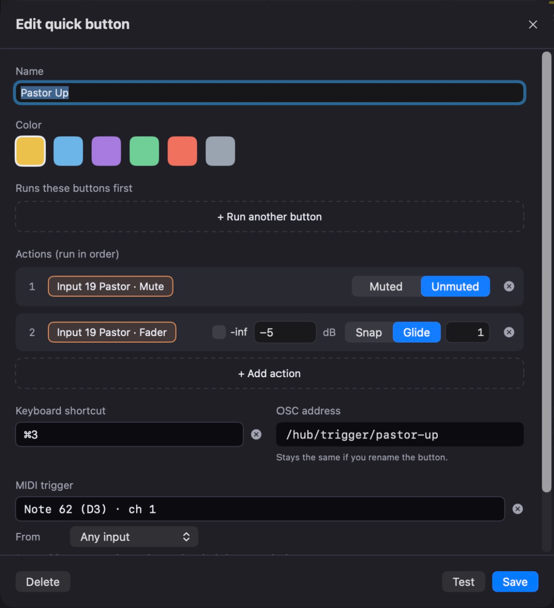
In the editor
| Field | What it does |
|---|---|
| Name and Color | How the button looks everywhere, including on phones. There are six colours. |
| Keyboard shortcut | Click, then press the keys. It needs Command, Option or Control. Esc cancels and Delete clears. |
| MIDI trigger | Click, then play the note or send the CC or program change that should press the button. Nothing is sent to the console while it waits. |
| OSC address | Made from the name when the button is first saved, such as /hub/trigger/pastor-up. It stays the same if you rename the button later, so cues built on it keep working. |
| Require confirm | The button needs two presses from a person: a click, a shortcut or a tap on a phone. The second press must follow within two seconds. MIDI and OSC always fire on the first, because whatever sends them cannot press twice. |
| Runs these buttons first | Other buttons this one runs before its own actions. |
| Actions | The changes it makes, in order. Click + Add action, then pick a target. A mute action is set to Muted or Unmuted, and a fader action to a level, each with its own Snap or Glide. The x removes an action. |
| Test | Sends the actions to the console once. Needs the hub armed and connected. |
| Save, Delete | Save keeps the button. The x at the top closes without saving. Delete removes the button, and takes it out of any button that ran it. |
Buttons that run other buttons
"Start of service" can run "Band on" and "Pastor up" and then add its own changes. A button runs whatever those buttons do at the moment it is pressed, so changing one changes every button that runs it. Where two set the same thing, the later one wins. The editor shows how many changes a press sends in all. A button cannot be made to run itself, directly or in a circle.
When a button fires, the buttons it ran light up with it, on the Mac and on phones.
Pressing
Click the tile, use its shortcut, send its MIDI trigger or OSC address, tap it on a phone, or use the menu bar panel. A tile is dimmed when the hub is disarmed or not connected. Hover over a tile to see its OSC address.
14. Sending cues: MIDI, OSC, Ableton Live
Click the Inputs pill for these settings. They are also under Settings > Inputs. There is a tab for each kind: MIDI, OSC and Ableton Live.
MIDI
The hub creates a MIDI port called Avantis Hub. Any app on the same Mac can send to it: choose it as a MIDI output in Ableton Live, MainStage, QLab, a controller editor and so on. There is nothing to switch on.
The hub can also listen to other MIDI inputs on the Mac: a hardware controller, a network MIDI session, or a port that brings MIDI from another computer. They are listed on the MIDI tab under the hub's own port, each with a switch, and all start off. A dot beside each one lights when MIDI arrives on it, whether it is switched on or not, so you can move a control, see which input lights, and switch that one on. Switch one on and its notes, control changes and program changes arrive as triggers, exactly as if they had been sent to the Avantis Hub port.
- Every input you switch on can fire every mapping and quick button, unless a mapping is tied to one input: in the inspector, From under the trigger chooses Any input, the Avantis Hub port, one of the inputs you have switched on, or the console. A tied mapping shows the input's name on its trigger and ignores the same note from anywhere else. A quick button's MIDI trigger has the same From choice in the button's editor.
- The choice belongs to this Mac. It is not part of the profile and is not shared with other Macs.
- An input that is unplugged stays in the list as Not connected, and the hub picks it up again when it comes back. The Monitor says when it goes and when it returns.
- Do not switch on an input that an app is already passing on to the Avantis Hub port. Each cue would arrive twice, and a toggle would flip and flip back.
SoftKeys and MIDI strips on the console
The console itself can send cues. A SoftKey, or a fader strip set up as a MIDI strip, can be given a MIDI message of your own on the console. With Use the console's SoftKeys and MIDI strips as triggers switched on for a board, in the console settings, those messages arrive in the hub as triggers and show in the Monitor as coming from Console.
- Set the SoftKey or strip to send a note or a control change on a MIDI channel outside the console's own five. With the console on 12 to 16, use 1 to 11. A message on one of the console's own channels is read as the console reporting a change, never as a trigger.
- Map it like any other trigger, or use Learn and press the SoftKey.
- The option is per board and off to start with. The hub must still be Armed for anything to reach the console.
- This relies on the console passing those messages over its network connection. Check it on your console before depending on it.
OSC
- Listen for OSC turns the listener on.
- UDP port is 9300 unless you change it. Press Return after a change.
Anything on the network can send to this port, which is one more reason nothing reaches the console unless the hub is Armed. See the OSC reference.
Ableton Live
The hub can read from Live directly through AbletonOSC, a free control surface script for Live.
- Download AbletonOSC from its page on GitHub: click Code, then Download ZIP. It needs Live 11 or later.
- Unzip it and rename the folder from
AbletonOSC-mastertoAbletonOSC. - Move that folder into
Music/Ableton/User Library/Remote Scriptsin your home folder, then restart Live. - In Live, open Settings > Link, Tempo & MIDI and choose AbletonOSC under Control Surface. Live shows "AbletonOSC: Listening for OSC on port 11000".
- In the hub, turn on Read song information from Ableton Live.
The hub only reads. It never plays, stops, moves or changes anything in Live.
AbletonOSC is a separate project with its own author. Its page has the current version and its own instructions, which are the ones to follow if they differ from these.
Session view: clips press quick buttons
Make a track in Live whose name starts with Hub, such as "Hub" or "Hub Lights". On it, add clips named after your quick buttons. When a clip on that track starts playing, the hub presses the quick button with the same name.
- Only tracks whose name starts with "Hub" count, so a clip called "Intro" on the drums track never fires a button called Intro. You can have several Hub tracks.
- Capitals do not matter, and spaces at the ends are ignored.
- Launching a scene fires the clip on each Hub track in that row.
- Launching a clip that is already playing fires it again. Stopping a track fires nothing.
- A clip that is already playing when the link comes on does not fire.
- After renaming a track or clip, allow a few seconds for the hub to notice.
- A button that needs confirming fires at once, as it does from MIDI.
The Monitor shows each press, and says so when a clip's name matches no button.
Arrangement view: locators
The hub also reads Live's locators, position, tempo and time signature. Locators appear in the Triggers column and can trigger mappings, and Show view's Up next card shows what is coming.
15. OSC reference
Send to the Mac's address on the hub's UDP port (9300 by default). Addresses are not case sensitive. <n> is the number shown on the console, starting at 1.
| Address | Argument | What it does |
|---|---|---|
/hub/scene | whole number, 1 to 500 | Recalls that scene. |
/hub/<strip>/<n>/mute | 1 or 0 | 1 mutes, 0 unmutes. Sending the same value twice is harmless. |
/hub/<strip>/<n>/fader | level in dB | From -54 to +10. At or below -54 is fully off, as are the words -inf and off. The fader jumps straight there. |
/hub/trigger/<name> | none, or 0.0 to 1.0 | Fires every mapping whose trigger is this address, and presses the quick button with this address. |
/hub/panic | none | The same as the Panic button. Works whether or not the hub is armed. |
Examples:
/hub/scene 12
/hub/input/9/mute 0
/hub/dca/2/mute 1
/hub/input/5/fader -10.0
/hub/trigger/pastor-up<strip> is the kind of channel, such as input, dca or mutegroup. Mute groups have no fader.
Triggers with a value
With no argument, a trigger is a press. With a number from 0.0 to 1.0, Value mappings follow it between their Min and Max. For the other modes, 0.5 and above counts as pressed and below 0.5 as released.
Your own addresses
Any address that does not start with /hub can be a mapping's trigger. This suits controllers that send fixed addresses, such as a TouchOSC fader on /1/fader1. Send it once, then click Use beside it in the Triggers column.
Song information
An app that follows your playback can tell the hub about the song, for Up next and locator triggers:
| Address | Arguments | Meaning |
|---|---|---|
/hub/song/locators | name, position, name, position… | The whole list of markers. Send it again whenever it changes, or with no arguments to clear it. |
/hub/song/position | number | Where playback is now, in beats. Send it several times a second while playing. |
/hub/song/playing | 0 or 1 | Whether the transport is running. |
/hub/song/tempo | number | Tempo in BPM. |
/hub/song/signature | two whole numbers | Time signature, for bar numbers. 4 4 is assumed until this arrives. |
There is no address to arm the hub.
16. The Monitor
The Monitor runs along the bottom of Build view and is the first place to look when something does not behave. Every line has a time, a label and what happened.
| Label | Meaning |
|---|---|
IN | A trigger arrived: a MIDI message or an OSC message, with where it came from. |
OUT | A change the hub sent to the console. |
ECHO | The console sending back a change the hub just made. A console on firmware V2.0 does not do this, so you may never see one. |
BOARD | Something reported by the console itself: a name, a colour, or a fader or mute moved by hand. |
HUB | The hub's own state: armed, disarmed, connected, a device pairing, a clip pressing a button. |
BLOCK | Something refused or ignored, with the reason, such as "Ignored, hub is disarmed: Button Pastor Up". |
- Raw bytes also shows the exact bytes exchanged with the console, for diagnosing.
- Clear empties the list.
- Copy puts every line on the clipboard, handy when asking for help. Right-click a line for Copy Line.
A healthy cue reads as an IN line followed by one or more OUT lines. An OUT line means the change was written to the console.
17. The menu bar
Avantis Hub keeps running when its window is closed, so a stray click on the close button cannot stop a service. The icon in the menu bar shows its state at a glance:
- Cyan: armed and connected.
- Red: the console has been lost, or the hub is armed with no console.
- Plain: otherwise.
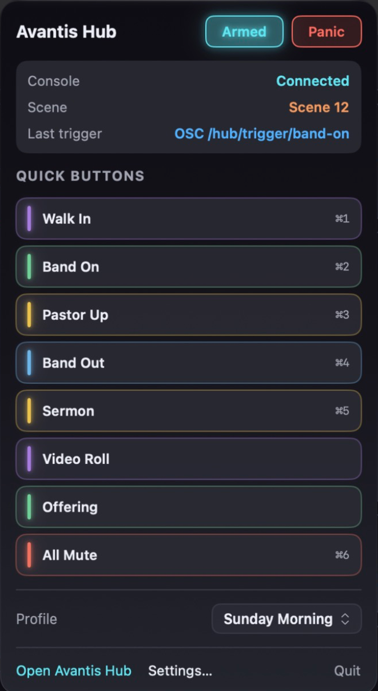
Click the icon for a panel with the connection state, the current scene, Armed, Panic, your quick buttons, the profile menu and Open Avantis Hub. Everything in the panel behaves exactly as it does in the window, including the second press for a button that needs confirming.
To stop the hub, choose Avantis Hub > Quit. If it is armed it asks first.
Only one hub at a time
Two hubs on one Mac would fight over the MIDI port, and both could act on the same trigger. So opening the app again hands over to the copy already running. If that copy is armed, it stays, comes to the front, and the new one steps aside.
18. iPhone and iPad
The companion app puts your quick buttons and the hub's status on an iPhone or iPad. A device only ever talks to the hub, never to the console, and everything it asks for goes through the same Armed check as any other trigger.
Pairing
- Join the device to the same network as the Mac and open Avantis Hub on it.
- On the Mac, open Settings > Devices and click Pair a Device. A 6-digit code appears.
- On the device, pick the Mac from the list and enter the code.
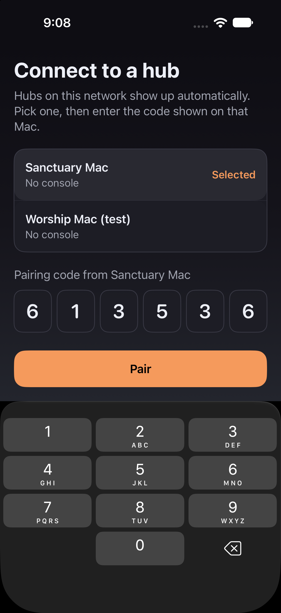
A code works for one device, runs out after a few minutes and stops working after five wrong tries. The device keeps its pairing in its keychain, so it reconnects by itself from then on.
The Control screen
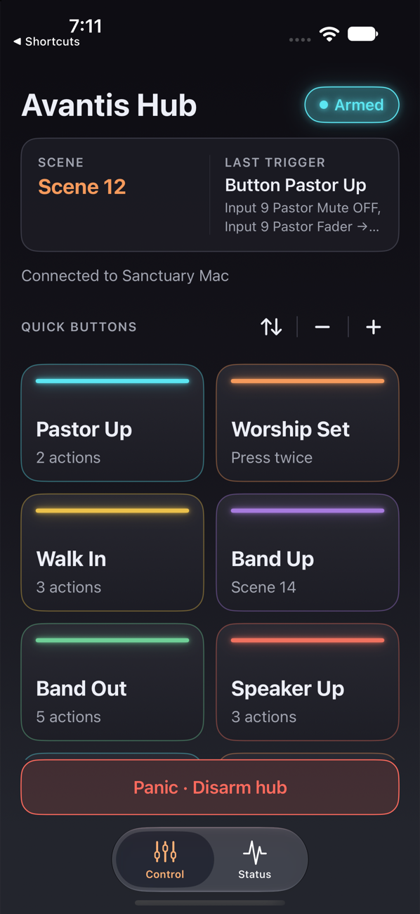
- Armed pill: whether the hub is armed. It glows when the hub is armed and has its console. A device cannot arm the hub.
- Status card: the current scene, and either what is up next or the last trigger.
- Quick buttons: tap to press. A button that needs confirming says "Tap again to fire". Buttons are dimmed when the hub is disarmed or the link is down.
- - and +: four sizes, from three small tiles across to one large tile you can hit without looking.
- Arrange (the arrows): drag buttons into your own order. Nothing fires while arranging. The order is kept on that device, for that hub. Reset goes back to the Mac's order.
- Panic: tap, then tap again to confirm. It disarms the hub. Shown only if the Mac allows this device to use it.
- Pull down to refresh.
The Status screen
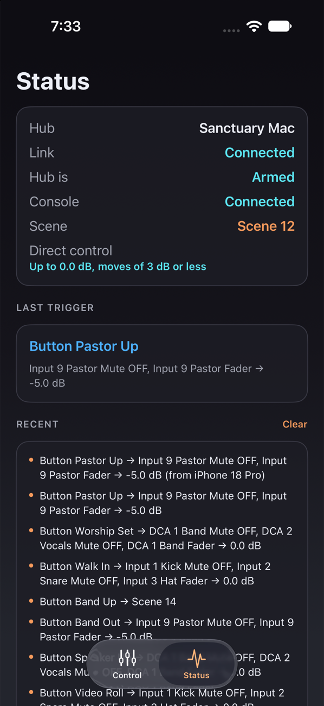
- The hub's name, the link, whether the hub is armed, whether it has its console, and the current scene.
- Direct control, if allowed, with the limits the Mac has set.
- Up next, Last trigger and Recent. Clear empties Recent on that device only.
- Hubs: every Mac the device is paired with. Tap one to switch. Pair another Mac adds one, and Forget removes the pairing.
If the hub you are using goes away and another paired one is on the network, the app offers to switch.
On iPad
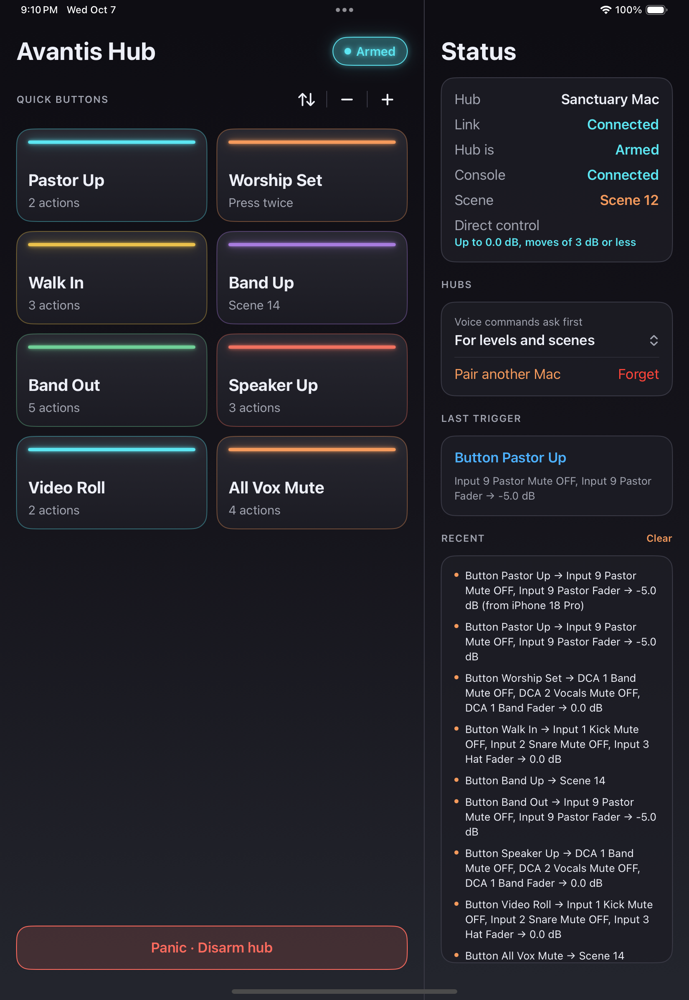
With room to spare, the buttons and the status sit side by side with no tabs. The buttons fill the width in as many columns as fit, and Recent scrolls in its own box. In Slide Over or a narrow Split View the app goes back to two tabs.
What a device may do
On the Mac, click a device in Settings > Devices to open its settings:
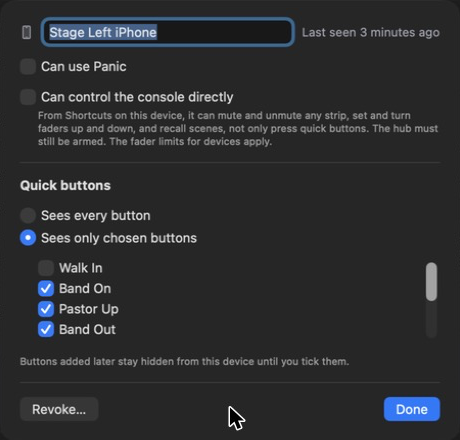
| Setting | Meaning |
|---|---|
| Name | How the device is listed. |
| Can use Panic | Whether the Panic button shows on it. |
| Can control the console directly | Lets Shortcuts on that device mute, unmute, set and nudge faders and recall scenes, not only press quick buttons. Off until you turn it on. |
| Sees every button / Sees only chosen buttons | Which quick buttons it is shown. With "chosen", buttons added later stay hidden from it until you tick them. |
| Revoke | Disconnects it at once. It has to pair again with a new code. |
A device is only ever sent the buttons it is allowed, so a hidden button cannot be pressed from it by any means.
Limits for devices
Also under Settings > Devices, for every device with direct control:
- Highest fader level a device may set: 0 dB unless you change it, anywhere from -20 to +10.
- Largest single "turn up" or "turn down": 3 dB unless you change it, from 1 to 6.
- A fader moved from a device: Snap, or Glide over a time. It starts as a one-second glide, which is kinder to a room than a jump.
Anything over a limit is refused, not trimmed to fit, so a mistake never lands "as close as allowed". Quick buttons are not affected by these limits: a button does what you built it to do.
19. Shortcuts on iPhone and iPad
The companion adds actions to the Shortcuts app, so the hub can be part of an automation, a Home Screen button, the Action button or a spoken phrase.
| Action | What it does | Needs |
|---|---|---|
| Fire Quick Button | Presses one of the device's quick buttons. | The button to be allowed on that device |
| Mute or Unmute a Strip | Mutes or unmutes a channel, DCA, group, aux, main or mute group. | Direct control |
| Set a Fader | Sets a fader to a level in dB. | Direct control |
| Turn a Fader Up or Down | Moves a fader from where it is, by an amount in dB such as 2.5. | Direct control, and the console to have reported that fader's level |
| Recall a Scene | Recalls a scene by number. | Direct control |
- Every action still needs the hub to be Armed.
- Each action reports back what happened, including why it was refused.
- Actions work with the app closed, as long as the device is on the hub's network.
- The app also offers ready-made shortcuts that appear in Shortcuts and Spotlight, such as "Mute", "Unmute", "Turn Up", "Turn Down" and "Recall Scene".
Asking first
Under Voice commands on the Status screen, choose when a spoken or ready-made command should ask before acting: Never, For levels and scenes, or For everything. A misheard level is heard by the whole room, while a misheard mute is quick to see and undo, which is why levels and scenes are the middle choice. Shortcuts you build yourself have their own Ask Before Running switch.
20. When channel names change
Mappings follow a channel by its name, not just its number. If you move "Pastor" from input 9 to input 12 on the console, the hub notices the name has moved and takes the mappings and quick buttons with it. A banner under the header tells you what it followed.
Sometimes it cannot decide for you:
- the name has disappeared from the console altogether, or
- two channels of the same kind now have the same name.
Then the banner asks. Until you choose, mappings and quick buttons that use those channels are on hold and will not fire, which is safer than guessing and unmuting the wrong channel. You can keep the mapping on its old channel number, or decide later.
21. Using more than one Mac
Two Macs can share one setup, for example a booth Mac and a laptop you prepare on.
- Open Settings > Sharing and click Choose a Folder.
- Pick a folder that syncs between the Macs, such as one in Dropbox or iCloud Drive. Use an empty one, or one another Mac is already sharing.
- Do the same on the other Mac, choosing the same folder.
Every Mac that chooses the folder uses the same boards, profiles, quick buttons and device limits, and picks up changes a few seconds after another Mac saves them.
What stays with each Mac
Paired devices, backups, MIDI and OSC settings, and which board and profile are in use. Each Mac keeps its own dated backups, so one can always undo what another saved.
Changes during a service
If another Mac changes the profile in use while this hub is armed, the change waits. A banner says the profile was changed on another Mac and offers to reload it. Nothing is swapped under you mid-service.
Conflicted copies
If two Macs edit while one is offline, the sync service may make a "conflicted copy". The hub brings those in as separate profiles so nothing is lost, and you can delete the one you do not want.
Stopping
Stop Sharing offers to keep a copy of the shared boards and profiles on this Mac, or to go back to this Mac's own setup from before. The folder is left as it is for the other Macs. Choosing or leaving a shared folder disconnects from the console and disarms.
22. Settings, tab by tab
Open with Avantis Hub > Settings or Command-comma.
Devices
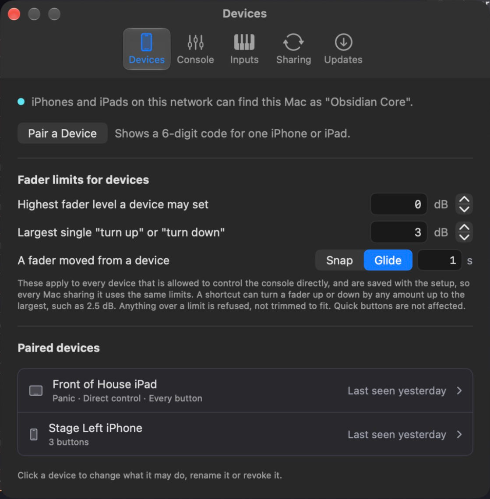
Devices." width="559" height="570" loading="lazy">- Whether devices on the network can find this Mac, and under what name.
- Pair a Device.
- Fader limits for devices and how a fader moved from a device travels.
- Paired devices: one line each with what it may do and when it was last seen. Click a device for its settings.
Console
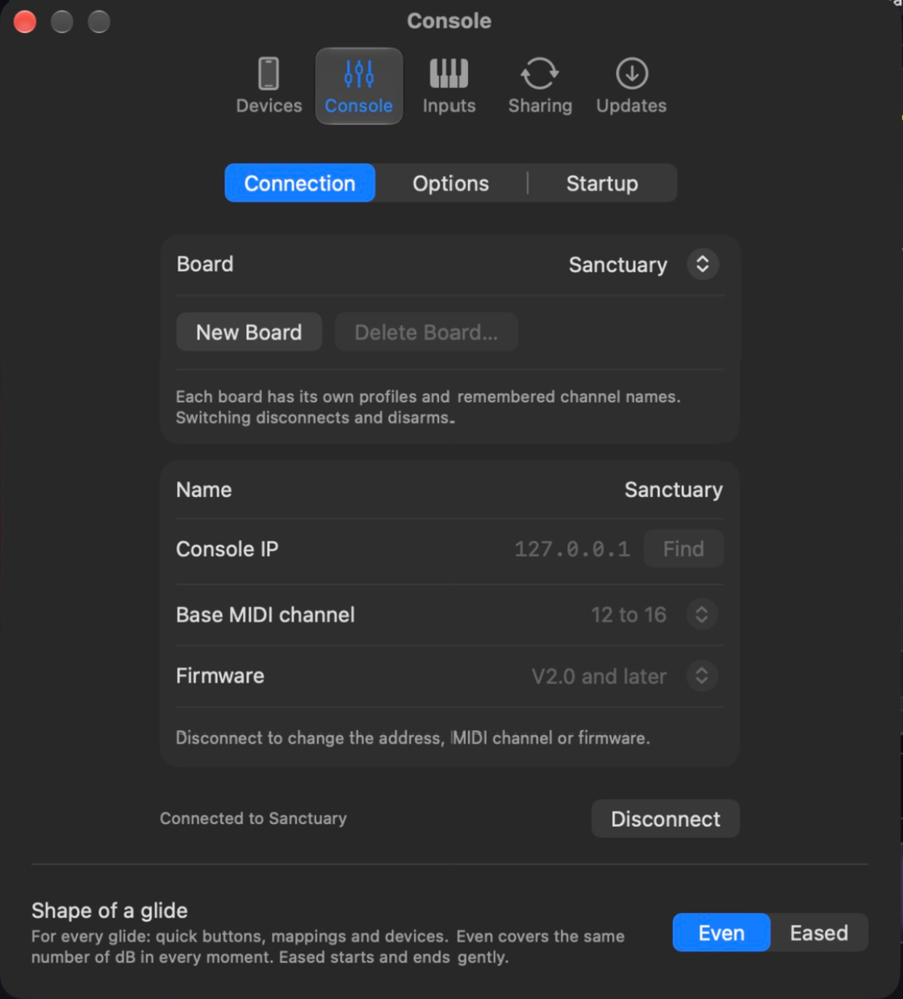
Console." width="559" height="619" loading="lazy">- Connection tab: Board, New Board and Delete Board, then the board's Name, Console IP with Find, Base MIDI channel and Firmware.
- Options tab, kept with the board: Read input mutes on connecting (experimental) (see Connecting to the console) and Use the console's SoftKeys and MIDI strips as triggers (see Sending cues).
- Startup tab, kept with this Mac: Connect when the app opens and Arm when the console connects.
- Connect or Disconnect is at the bottom of every tab.
- Shape of a glide: Even or Eased.
Inputs
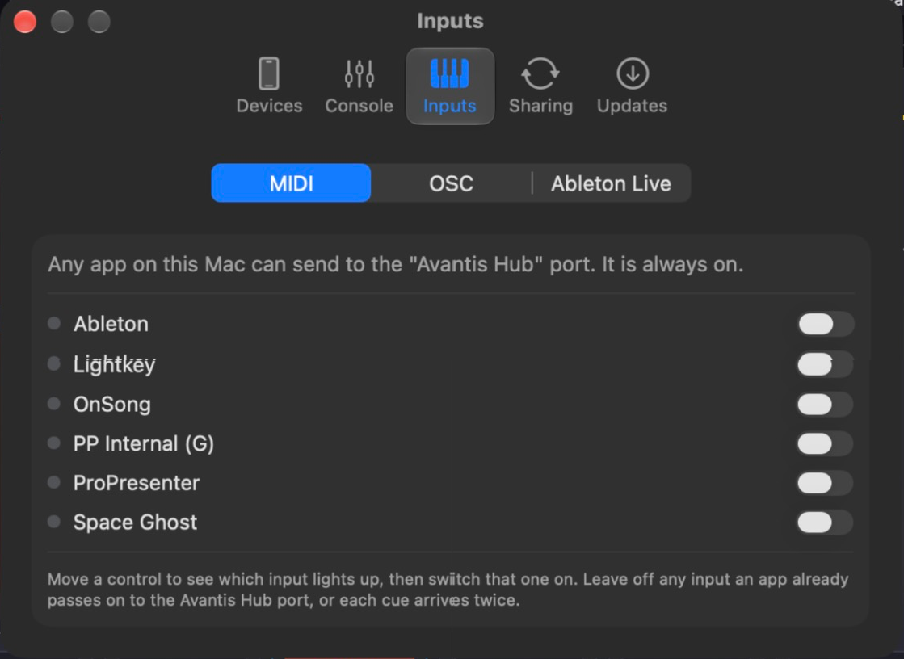
Inputs." width="559" height="408" loading="lazy">- MIDI: the name of the hub's port, or the reason it could not be opened, and a switch for each other MIDI input on the Mac. See Sending cues.
- OSC: Listen for OSC and the UDP port.
- Ableton Live: the switch, the state of the link, and the address and ports.
Sharing
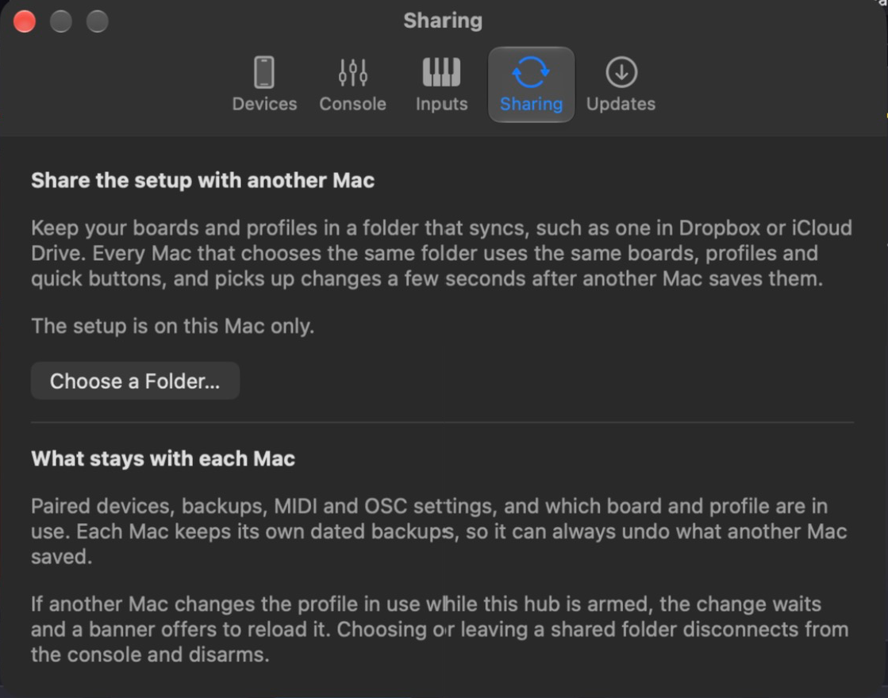
Sharing." width="559" height="440" loading="lazy">The shared folder, if any, with Show in Finder, Choose Another Folder and Stop Sharing.
Updates
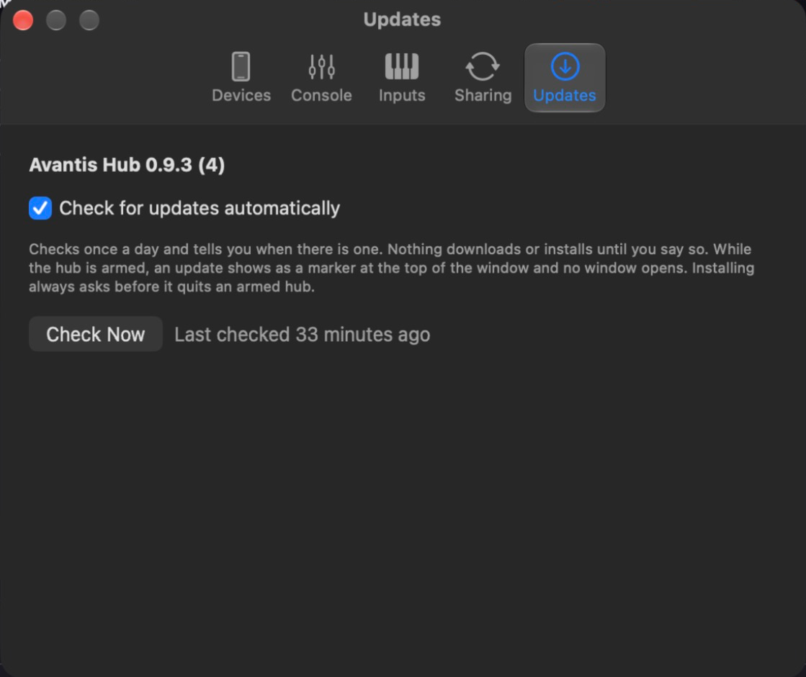
Updates." width="559" height="470" loading="lazy">The version you are running, Check for updates automatically, Check Now and when it last checked.
23. Updates
The hub checks for a new version once a day. Nothing downloads or installs until you say so. To check yourself, choose Avantis Hub > Check for Updates.
- Disarmed: a window tells you about the new version and offers to install it.
- Armed: no window opens, so nothing gets in the way of a service. An Update marker appears at the top of the window, in the menu bar panel and in Settings. Click it when you are ready to look.
Installing restarts the hub. If it is armed, it asks first. Your boards, profiles, quick buttons and paired devices are kept apart from the app and are not touched by an update.
The iPhone and iPad app updates separately, the way your other apps do.
24. Keyboard shortcuts
| Keys | Action |
|---|---|
| Tab | Swap between Build and Show. In a field with text in it, or while a mapping is open, Tab moves between fields as usual. |
| Esc | Back out of the mapping inspector or an editor without saving. |
| Command-Z, Shift-Command-Z | Undo and redo mapping and quick button changes. |
| Command-comma | Settings. |
| Shift-Command-D | The Debug window, for diagnosing the connection. |
| Your own | Each quick button can have its own shortcut, set in its editor. |
25. Troubleshooting
Start with the Monitor: it nearly always says what happened and why. The FAQ covers the common cases in more detail.
| What you see | Most likely cause |
|---|---|
| The pill never reaches Connected | Wrong address, different network, or the Mac's Local Network permission is off. |
| Connected, but channel names do not appear | The Base MIDI channel does not match the console, or another app is already using the console's MIDI control port. |
| Channels above 64 are missing, or a mapping says its target is not on this firmware | The board's Firmware is set to Before V2.0. |
| A trigger shows in the Monitor but nothing changes | The hub is disarmed, the mapping is switched off, or the mapping is on hold after a name change. |
| Nothing shows in the Triggers column | The sender is not using the Avantis Hub MIDI port, a controller's input is not switched on in the Inputs settings, or OSC is off or on another port. |
| A fader shows ? or is dimmed | The console has not reported it since connecting. Move it once. |
| A mute reads MUTE ? | The console has not reported that mute on this connection. Press it, or change it at the console. |
| Show view seems to be missing channels | Named is on, and those channels have no name on the console. |
| A cue fires twice, or undoes itself | Two mappings share a trigger and a target. Look for the warning triangle. |
| A device cannot find the Mac | Different network, or a network that stops devices seeing each other. |
| Ableton link says another app is using the port | Another app on the Mac is already reading from AbletonOSC. |